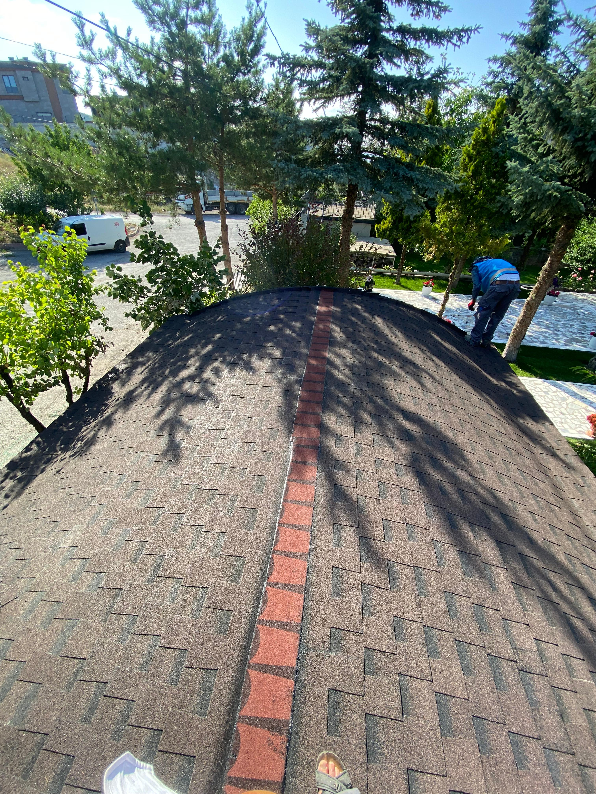

Çatı Yalıtımı
Villa Çatı Yalıtımı
Beykoz'da 350m² villa çatısında bitüm membran uygulaması. UV dayanıklı kaplama ile 15 yıl garanti.

Çatı Yalıtımı
Apartman Çatı Yalıtımı
Şişli'de 8 katlı apartman çatısında kristalize sistem uygulaması. Detaylı su testi ile teslim.

Teras Yalıtımı
Teras Bahçe Yalıtımı
Kadıköy'de lüks rezidans teras bahçesinde PVC membran ve drenaj sistemi kurulumu.

Teras Yalıtımı
Ofis Binası Teras Yalıtımı
Levent'te plaza binasında 1200m² teras alanında poliüretan membran uygulaması.

Bodrum Yalıtımı
Bodrum Perde Yalıtımı
Sarıyer'de müstakil evde bodrum perde duvarlarında XPS levha ve membran uygulaması.
Bodrum Yalıtımı
AVM Bodrum Yalıtımı
Bahçeşehir AVM'de bodrum katlarında kristalize ve drenaj sistemi uygulaması.
Havuz Yalıtımı
Özel Havuz Yalıtımı
Büyükada'da özel villa havuzunda TSE onaylı sürme izolasyon malzemesi uygulaması.
Havuz Yalıtımı
Otel Havuz Yalıtımı
Beşiktaş'ta 5 yıldızlı otelde çatı katı havuzunda kimyasal dayanıklı membran uygulaması.
Çatı Yalıtımı
Fabrika Çatı Yalıtımı
Çerkezköy'de tekstil fabrikasında 5000m² alanda endüstriyel çatı yalıtım sistemi.
Teras Yalıtımı
Hastane Teras Yalıtımı
Beyoğlu'nda özel hastanede yoğun bakım üstü teras katında özel membran uygulaması.
Havuz Yalıtımı
Su Deposu Yalıtımı
Pendik'te içme suyu deposunda TSE onaylı ve kimyasal dayanıklı izolasyon uygulaması.
Bodrum Yalıtımı
Metro İnşaatı Yalıtımı
Ümraniye metro istasyonunda yeraltı duvarlarında negatif basınca dayanıklı sistem.